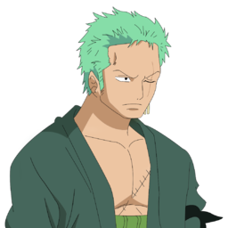
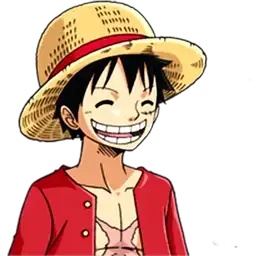
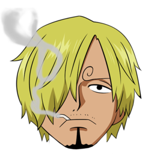

1- Zoro, que é conhecido como O Caçador de Piratas, é um pirata e ex-Caçador de Recompensas, e também um espadachim que usa 3 espadas
2- Luffy, também conhecido como "Luffy do Chapéu de Palha" ou "Chapéu de Palha", é um pirata e o principal protagonista do anime e mangá One Piece
3- Vinsmoke Sanji "Perna Negra" é o pirata cozinheiro dos Chapéu de Palha. Ele é oficialmente o quinto membro da tripulação e o quarto a entrar, fazendo isso no fim do Arco Baratie.
Assim formando o trio mais forte dos Chapéus de palha!!!